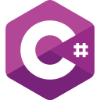
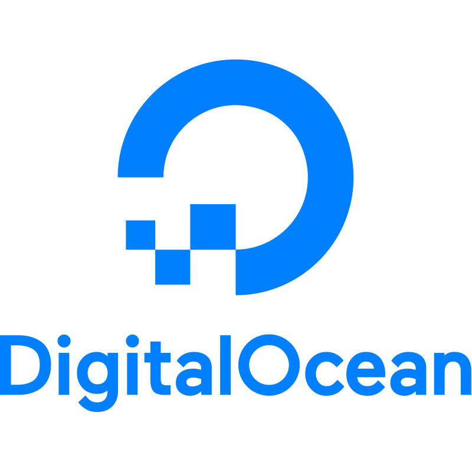
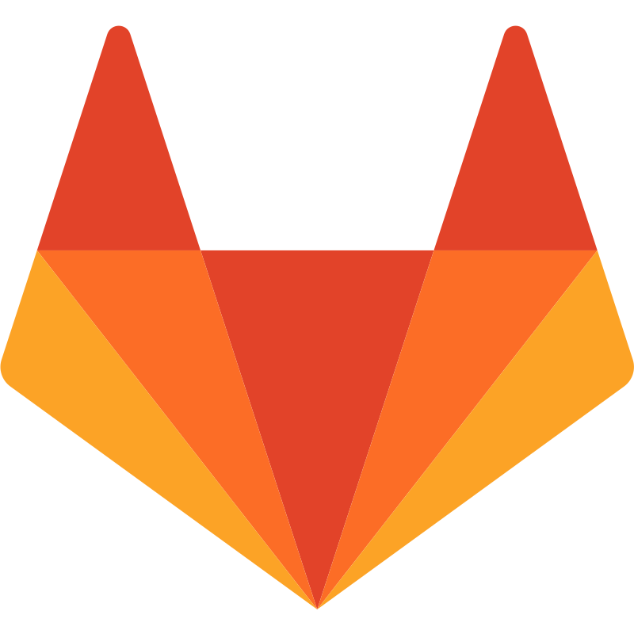
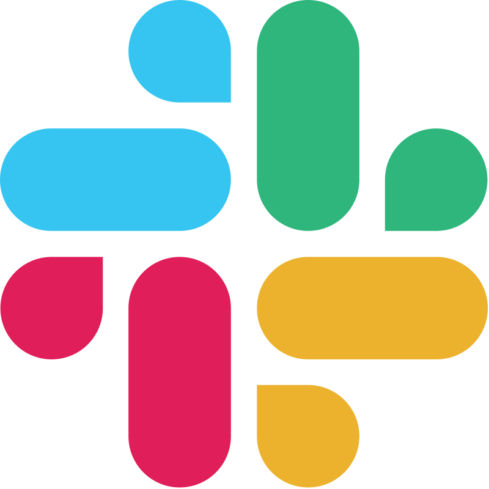
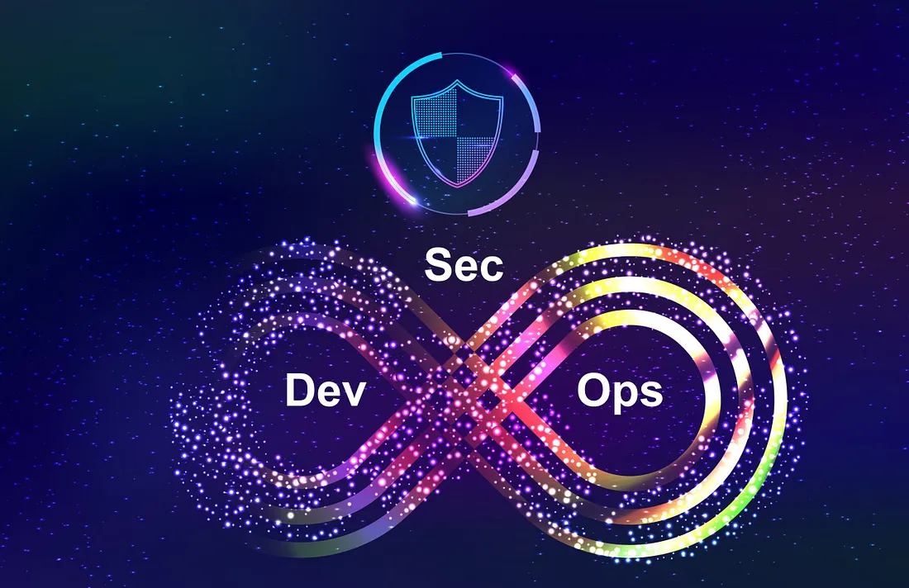
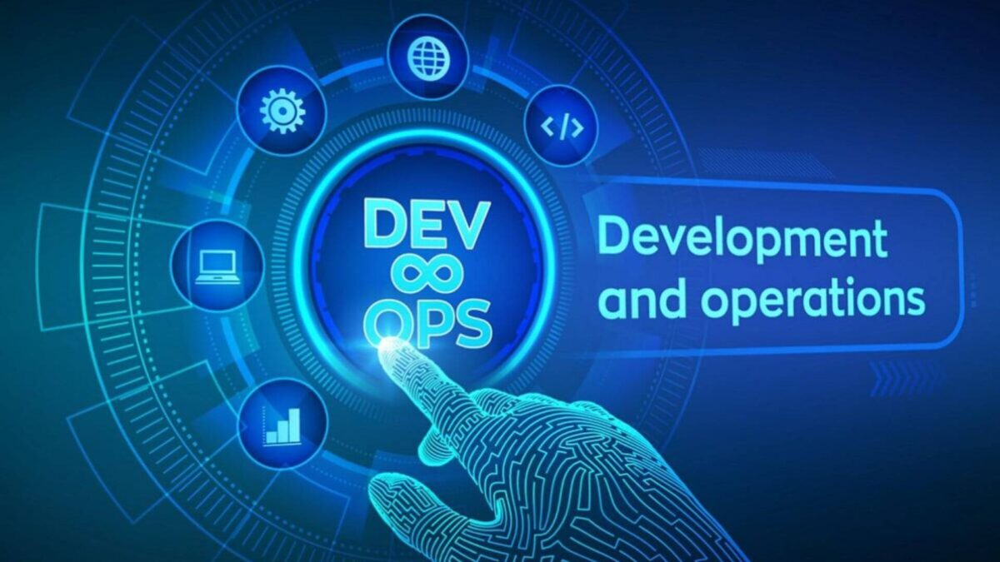

A passionate Trainee DevOps Engineer with hands-on experience in managing production systems across QA, UAT, and live environments. Skilled in building scalable, secure, and automated solutions using Docker, Kubernetes, CI/CD pipelines, and cloud platforms including AWS, Azure, and Google Cloud. Experienced in DevSecOps practices, monitoring, and system reliability, with a strong focus on continuous improvement and high-performance infrastructure.




Supporting production, QA, and UAT environments using Docker, Kubernetes, and CI/CD pipelines. Troubleshooting live system issues through monitoring, log analysis, and incident resolution. Contributing to AWS and on-prem infrastructure while working on high-availability FinTech systems with strong security requirements.
Developed and deployed a full-stack recruitment system using Express.js and Vue.js. Managed deployments on cloud infrastructure using Docker, Nginx, and GitHub Actions. Automated CI/CD pipelines, server configurations, and implemented secure role-based access with workflow tracking.
Built scalable REST APIs using Node.js, Express.js, Prisma, and MySQL. Collaborated in Agile teams to deliver backend services for production-grade applications, focusing on performance, scalability, and clean architecture.
Completed a Pearson (UK) BTEC HND in Computing with a Distinction pass from ESOFT Metro Campus. Built a strong foundation in software engineering, covering programming, systems analysis, and database management.
Enrolled at the Institute of Computer Engineering Technology (iCET), expanding knowledge in computer software engineering. This program emphasizes hands-on learning and industry-relevant skills. GPA: 3.85
Currently pursuing a Bachelor of Engineering (Hons) in Software Engineering (TOP UP) at London Metropolitan University, UK. Enhancing expertise in software design, development, and engineering principles.
Designing and managing scalable cloud infrastructure across AWS, Azure, and Google Cloud. Experience with deployment, networking, and maintaining high-availability systems in production environments.
Containerizing applications using Docker and managing deployments with Kubernetes. Experience with scaling applications, managing pods, and ensuring reliability using orchestration tools.
Building automated CI/CD pipelines using Jenkins and GitHub Actions. Automating build, test, and deployment workflows to improve delivery speed and reduce manual effort.
Integrating security into CI/CD pipelines using tools like SonarQube and Trivy. Performing vulnerability scanning, code quality checks, and ensuring secure deployments.
Implementing monitoring and logging solutions using Prometheus and Grafana. Troubleshooting production issues, analyzing logs, and improving system performance and uptime.
Developing RESTful APIs and automation scripts using Node.js, Python, and Bash. Building scalable backend systems and automating server configurations and workflows.

Implemented a DevSecOps pipeline by containerizing the application with Docker on Red Hat Linux, automating CI/CD with Jenkins and GHCR, deploying via Argo CD to Kubernetes with HPA, and managing traffic using Nginx as a reverse proxy and load balancer.

Deployed a containerized Netflix clone on AWS EC2 using Docker, implemented automated CI/CD pipelines with Jenkins, integrated SonarQube and Trivy for code quality and security scanning, and set up Prometheus and Grafana for monitoring and alerting.

Multimodal AI-driven healthcare assistant using Python, Gradio, and SQLite. Integrated Whisper for speech transcription and LLaMA 4 Vision for medical image analysis.
AI-powered attendance system using OpenCV and Firebase with 95%+ accuracy, reducing manual effort by 80%.
Developed and deployed a full-stack recruitment system using Express.js and Vue.js. Implemented CI/CD pipelines with GitHub Actions and managed deployments using Docker and Nginx on cloud servers. Automated builds, server configurations, and monitored system performance while ensuring secure role-based access.

ASP.NET Core MVC ticketing platform with secure payments, role-based authentication, and real-time ticket sales tracking.
REST APIs for plant ordering & monitoring built with Express.js, JWT, Prisma, and Swagger documentation.
Backend system with Express.js, Prisma, MySQL, JWT for order management, real-time tracking, and secure rider coordination.
C# desktop system for goods transport management with MySQL, implementing MVC architecture and real-time vehicle tracking.
Layered architecture system using JavaFX and MySQL for efficient hospital management with secure patient record handling.

Spring Boot & Hibernate-based ordering system improving efficiency by 20% with real-time order management via REST APIs.

This system was developed using Java, with Data Structures and Algorithms for efficient queue operations, and implemented in Microsoft Visual Studio Code.
This project was developed using Python, adhering to SOLID principles and clean coding practices, with pytest for testing, and implemented in Microsoft Visual Studio Code.
This project was developed to showcase Malcolm Lismore's portfolio, utilizing HTML5, CSS3, JavaScript, PHP, and MySQL for an engaging design and easy navigation.
This C# application for Grifindo Travels was developed using C#,MySQL and Visual Studio to calculate and record rental and hire charges for various vehicles, including cars, SUVs, and vans, supporting both driver-assisted and self-drive rental options.
This database for Quiet Attic Films was developed using C# and MySQL to organize key data on clients, assets, and production workflows, improving operations and collaboration within the company.
This project involved designing and implementing an efficient network for the Matara branch using Cisco Packet Tracer, covering LAN/WLAN standards, topology selection, VLAN configuration, and essential network devices.

Built a microservices-based hotel booking system using Express.js and Spring Boot. Implemented secure transactions, automated reservation cancellations, and billing workflows. Designed for scalability and efficient hotel operations with a focus on performance and reliability.